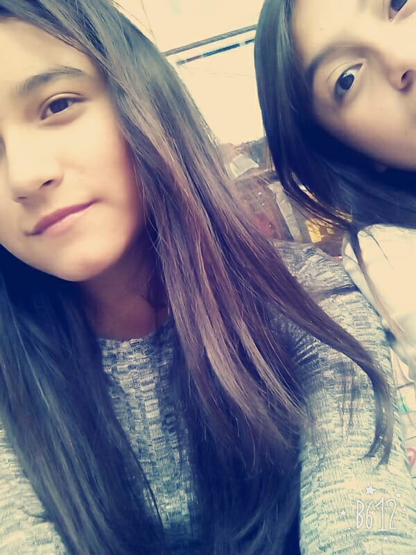

Los amigos en realidad son muy importantes para la vida de cualquier persona, te hacen sentir en compañía y siempre te divierten con las ocurrencias que cada uno inventa. Todos los lazos de amistad que tienes pueden llegar a ser muy diferentes entre sí, hay amigos que simplemente llegan a darte una lección de vida por la situación que pasa, otros que están para ti en un preciso momento y después no tienen mas nada que hacer a tu lado, hay otros que simplemente estan contigo en las buenas, en esos momentos de gloria y felicidad y los que de verdad valen la pena tener son los que se quedan en las malas y en las buenas contigo, aquellos que siemore buscan también lo mejor para ti, y siempre te defienden y te toman en cuenta para cualquier proyecto grande que tengan.


En mi caso, tengo grandes amigos a quienes aprecio, y todos y cada uno de ellos es diferente, tanto en su aspecto físico, como en el aspecto sentimental. Pero así como son de diferentes todos me traen a mi mucha alegría y tranquilidad pues estando con ellos hay confianza y diversión.
De entre muchos de mis amigos puedo destacar a unos cuantos, a quienes en realidad les he podido confiar muchas cosas y me he mostrado tal y como en realidad soy.
Mi mejor amigo, alguien a quien le puedo contar de mis problemas, mis anécdotas y siempre me ayuda a sobrellevarlas o festeja conmigo los momentos de alegría, lo llevo conociendo mas de 9 años y hasta ahora hemos tenido lindos momentos. Y cada que escucho esta canción me cuerdo mucho de él...Es un gran amigo para mí sin duda.
Mi grupito favorito, a ellas las conocí en la primaria. Aiko aunque con mucho mas tiempo de conocernos, 6to fue el año en el que más nos juntamos, y siempre me ha demostrado ser tierna y buena amiga. Victoria, con tan solo un año de poder conocer todos sus gustos, sus pasiones y sus hábitos, pude notar que teníamos muchas cosas en común, creo que por ello no nos llevabamos con mucho cariño, pero sin duda es la niña mas linda que haya conocido. Y Valentina, bueno ella para mí es más que una simple amiga, siempre que ha podido me ha apoyado, me da los mejores consejos que quizá hasta yo daría, muchas veces concordamos en cómo manejamos las cosas y los problemas de cada una, y es por ello que la considero como alguien con suma importancia, por la manera en que nos entendemos y nos ayudamos, y eso sigue siendo a pesar de la distancia y la poco frecuencia entre nosotras, ella es mi mejor amiga.
Valentina Mondragón |
|  Victoria Mondragón |
Aiko Martínez |
Ella siempre me ha traido muchas enseñanzas de vida, porque me ha demostrado que a pesar de tantos problemas que pueda haber al rededor, hay que estar simpre de pie y con toda la actitud, no dejar caernos ante nada porque la vida siempre va a seguir muchos consejos le he dado y ella a mi, siempre me trae buenos recuerdos porque asi los pasamos desde la primaria, hasta ahora hemos sido muy buenas amigas y nos hemos llevado demasiado bien, el mejor recuerdo que tengo con ella es el de una canción "Luz de día" ya que siempre era la que cantabamos juntas por que a las dos nos encantaba. Para mí es ella una persona muy fuerte, linda e inteligente
Ella es el tipo de amiga que quizá no esté muy presente siempre, pero que sin duda le puedes pedir ayuda o apoyo para lo que sea y ella va a hacer el esfuerzo por ti, te ayudara a sobrellevar y a superar y a ganar, es más que linda con todos sus amigos y prefiere que no les hagan daño porque realmente es impulsiva, siempre que ha podido me a ayudado y también ayuda a muchas personas porque así es ella y tiene un enorme corazón.
Es una persona a quien apenas cumpliré un año de conocerla, pero desde la primera vez que cruzamos palabra, hemos tenido grandes y lindos momentos en los cuales hemos sido tan alegres, tan felices y coincidimos mucho en nuestra manera de liderar. Es una amistad que a pesar del poco tiempo conociendonos, le puedo confiar muchas cosas ya que ella entiende lo importante que son esas cosas para mí. Y sinceramente si quisiera que se quedara en mi vida por mucho tiempo más.
También es una chica super linda, tierna, inteligente y responsable que me trae mucha diversion y momentos felices cuando estoy junto a ella, muchas veces me apoya mucho con cualquier situación y bromeamos mucho juntas. Ella es una amistad que deseo tener por mucho tiempo más.